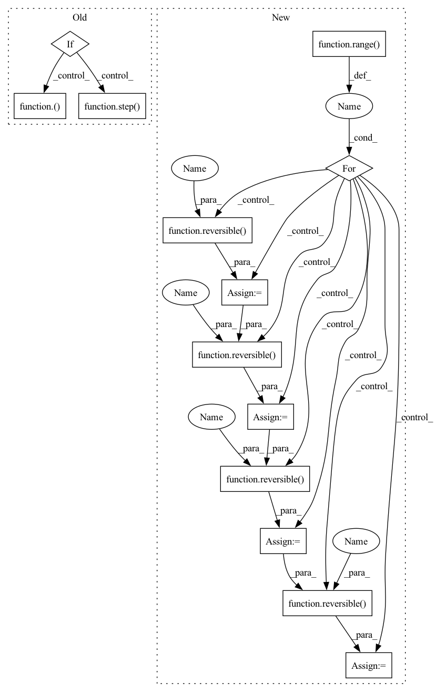

Pattern ID :3199
Before Change
src = input_embed(ctx, src)
zero = shard(jnp.zeros_like(src))
src = 0, (src, zero, src, zero)
if ctx.is_initializing:
src = step(ctx)( src, None)
else:
src = lax.scan(step( ctx) , src, None, ctx.dims.sizes.depth, unroll=ctx.model.scan_unroll)
return output_embed(ctx, revnet_out(src[0][1]))
After Change
src = input_embed(ctx, src)
zero = shard(jnp.zeros_like(src))
src = src, zero, src, zero
for _ in range( ctx.dims.sizes.depth) :
src = reversible(ctx , momentumnet_main(ctx, spatial_mixing), src)
src = reversible(ctx , momentumnet_side(ctx), src)
src = reversible(ctx , momentumnet_main(ctx, feed_forward), src)
src = reversible(ctx , momentumnet_side(ctx), src)
return output_embed(ctx, revnet_out(src[0][1]))
def compute(params: typing.Dict[str, jnp.ndarray], inp: jnp.ndarray) -> typing.Tuple[jnp.ndarray, jnp.ndarray]:In pattern: SUPERPATTERN
Frequency: 3
Non-data size: 13
Instances Fragment ID: 12234330
Project Name: homebrewnlp/homebrewnlp-jax
Commit Name: da72f29cee6f596776ec097dc2b9780881938f2a
Time: 2021-09-18
Author: 39779310+ClashLuke@users.noreply.github.com
File Name: src/model.py
M Class Name: AnonimousClass
N Class Name: AnonimousClass
M Method Name: body_ctx(2)
N Method Name: body_ctx(2)
M Parent Class:
N Parent Class:
M File Name: src/model.py
N File Name: src/model.py
M Start Line: 283
M End Line: 290
N Start Line: 254
N End Line: 262
Before Change
src = input_embed(ctx, src)
zero = jnp.zeros_like(src)
src = (src, zero, src, zero)
if ctx.is_initializing:
ctx.parameters = step( ctx) (src, ({}, 0))
else:
src, _ = step(ctx)( src, (ctx.parameters, 0))
out = revnet_out(src)
out = scale_norm_act(ctx, out, ctx.dims.features, act=False)
wgt = get_param(ctx, "out_embd", [ctx.dims.features, ctx.dims.vocab], std=1,
lr_scale=ctx.optimizer.output_scale, scale=1 / ctx.dims.heads)After Change
src = [ctx.parameters] + list(src)
for _ in range(ctx.model.unroll_depth):
for depth in range( ctx.model.qrnn_frequency) :
src = reversible( ctx, pointwise_block, src)
src = reversible( ctx, bottleneck_block, src)
src = reversible( ctx, pointwise_block, src)
if depth % ctx.model.qrnn_frequency == (ctx.model.qrnn_frequency // 2 - 1):
src = reversible( ctx, qrnn_block, src)
// lax.cond could work but requires work on the parameter store
if ctx.is_initializing:
ctx.parameters = src[0]
Fragment ID: 12234331
Project Name: homebrewnlp/homebrewnlp-jax
Commit Name: 62dfa2ef160a05f91b52c4d92eb607fe251fdfa9
Time: 2022-08-28
Author: 39779310+ClashLuke@users.noreply.github.com
File Name: src/model/main.py
M Class Name: AnonimousClass
N Class Name: AnonimousClass
M Method Name: body_ctx(2)
N Method Name: body_ctx(2)
M Parent Class:
N Parent Class:
M File Name: src/model/main.py
N File Name: src/model/main.py
M Start Line: 50
M End Line: 55
N Start Line: 29
N End Line: 43
Before Change
src = input_embed(ctx, src)
zero = shard(jnp.zeros_like(src))
src = 0, (src, zero, src, zero)
if ctx.is_initializing:
src = step(ctx)( src, None)
else:
src = lax.scan(step( ctx) , src, None, ctx.dims.sizes.depth, unroll=ctx.model.scan_unroll)
return output_embed(ctx, revnet_out(src[0][1]))
After Change
src = input_embed(ctx, src)
zero = shard(jnp.zeros_like(src))
src = src, zero, src, zero
for _ in range( ctx.dims.sizes.depth) :
src = reversible( ctx, momentumnet_main(ctx, spatial_mixing), src)
src = reversible( ctx, momentumnet_side(ctx), src)
src = reversible( ctx, momentumnet_main(ctx, feed_forward), src)
src = reversible( ctx, momentumnet_side(ctx), src)
return output_embed(ctx, revnet_out(src[0][1]))
def compute(params: typing.Dict[str, jnp.ndarray], inp: jnp.ndarray) -> typing.Tuple[jnp.ndarray, jnp.ndarray]: Fragment ID: 12234333
Project Name: homebrewnlp/olmax
Commit Name: da72f29cee6f596776ec097dc2b9780881938f2a
Time: 2021-09-18
Author: 39779310+ClashLuke@users.noreply.github.com
File Name: src/model.py
M Class Name: AnonimousClass
N Class Name: AnonimousClass
M Method Name: body_ctx(2)
N Method Name: body_ctx(2)
M Parent Class:
N Parent Class:
M File Name: src/model.py
N File Name: src/model.py
M Start Line: 283
M End Line: 290
N Start Line: 254
N End Line: 262